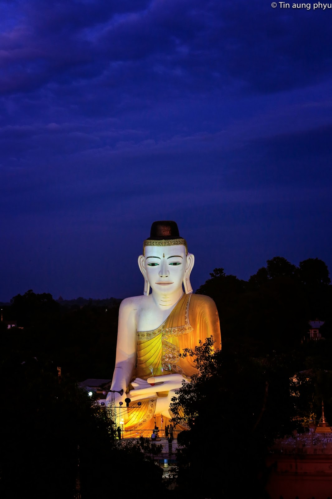
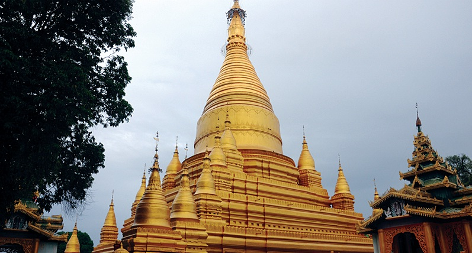
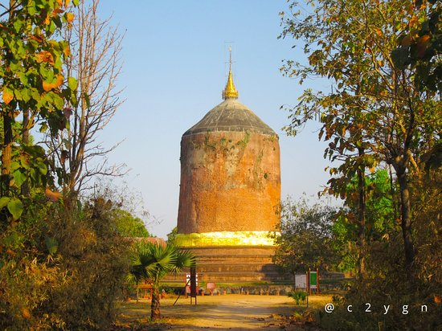
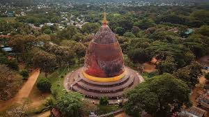

Shwe San Daw
Shwe San Daw
Shwe San Daw
Yangon-Pyay Road
05325180.
See More

Sel Htet Gyi
Sel Htet Gyi
Closed to the Buddhhist Temple "Shwe San Taw"
See More

Shwe Bon Thar
Shwe Bon Thar
On the other side of Pyay
See More

Baw Baw Gyi
Baw Baw Gyi
In SiriKettaya acient city
See More

Phaya Gyi
Phaya Gyi
On Pyay-Aung Lan Road
See More
Shwe San Daw's History
In Myanmar, there are three famous pagodas called "Shwe San Daw". This three pagodas are located in Pyay, Taungoo and Ton Tay.The Shwe San Daw Pagoda is a revered and ancient stupa, esteemed as a prominent place of worship since its establishment. Located on a small hill named "Thudathana" in the eastern part of Pyay city, Bago Region, the pagoda is also historically known as Mya Thi Tin Pagoda. The dimensions of the Shwe San Daw Pagoda are notable:the base diameter is 127 feet (85spans), the circumference is 88 feets 8 inches, and the height is 294 feets.It is unique, unlike other pagodas in Myanmar, it is a pagoda with 2 storeys, 2 storeys, 2 storeys and 2 floors of Aung Mun. In addition, it is a temple of Mon-Myanmar friendship.
ရွှေဆံတော် သမိုင်းကြောင်း
လေးဆူဓာတ်ပျော် ရွှေဆံတော်စေတီတော်မြတ်ကြီးသည် မြတ်စွာဘုရား သက်တော်ထင်ရှား ရှိစဉ်ကပင် တည်ထားကိုးကွယ်ခဲ့သော စေတီတော်မြတ်ကြီးဖြစ်သည်။ ပဲခူးတိုင်းဒေသကြီး၊ ပြည်မြို့၏ အရှေ့ပိုင်း ဆင်စုရပ်မြောက်ဘက်၊ ဆံတော်ရပ်၌ "သုဒဿန"မည်သော တောင်ကုန်းငယ်တွင် တည်ရှိသည့်ရွှေဆံတော်ဘုရားကို မြသိတင် (မြသီးတင်) ဘုရားဟုလည်း ရှေးကခေါ်တွင်ခဲ့သည်။ ရွှေဆံတော်၏ ဉာဏ်တော်မှာ ထီးတော်မှ ဖိနပ်တော် (တတိယပစ္စယံ)အထိ ၁၂၇ ပေ၊ (၈၅တောင်)၊ လုံးပတ်တော် ၈၈ ပေ ၈ လက်မ၊ ဖိနပ်တော် ၂၉၄ ပေ အသီးအသီး ရှိလေသည်။ထူးခြားချက်မှာ မြန်မာနိုင်ငံတွင်ရှိသော တခြားဘုရားများနှင့်မတူပဲ ထီးတော်၂ထပ် ပွဲတော်၂ထပ် နှင့် အောင်မြေ၂ထပ် ရှိသောဘုရားတစ်ဆူဖြစ်သည်။
ထိုပြင် မွန်မြန်မာချစ်ကြည်ရေး ဘုရားတစ်ဆူလဲဖြစ်သည်။
Sel Htat Gyi's History
When King "Duttapaw" came to pay his respects to the Shwedagon Pagoda, he used to tie his elephants and horses on the ground in front of the Golden Hair Stupa.The commander of the army of elephants camped at the top of the eastern slope, so it is now called Elephant Tent School.When King Duttapao died, his sons, the monks "Sandasiri" and "Sandagraza", brought the king's royal robes and ornaments from "Sri Lanka", and under the supervision of the two arahant lords and the queen of "Panthua", he erected two twin elephant and horse twin pagodas.Then the elephant thread, As the two Myengya Pagoda pagodas fell into disrepair after a long period of time, they were led by monk Buddha Nattayazwanta and the Elephant Yapa on the land of Zeya Patwi. In the place of the Myengtai Pagoda, the ten-story Pagoda was built since 1280.As it collapsed twice without reaching the top, in 1282 (1282), according to the calculations of the astrologers, the star of power was falling, and the siblings were subordinate to each other, and it would only succeed if the foundation was laid by the younger brother Sane Son and the younger sister Kurthapatetai.However, with the permission of their parents, Maung Tin Maung (3) and Ma Khin Than's (5) two siblings were carried down into the pit of the earth by their arms and carried by two gold-plated bricks to lay the foundation.At that moment, the giant lips of the warlords threw their guns into the sky, and the ground shook softly.As a mark of success, they stood behind the two siblings, who were blessed by Grand Master U Saw Bhai, chanting mantras, He blew white conch shells and sprinkled drops of water from the silver bowl.Fans threw popcorn on top of the pit. This was the third brick laying for the construction of the ten-story pagoda.
ဆယ်ထပ်ကြီး သမိုင်းကြောင်း
ဒွတ္တဘောင်မင်းကြီးသည် ရွှေဆံတော်စေတီတော်မြတ်ကြီးအား ဖူးမြော်ရန်လာရောက်သောအခါ ရွှေဆံတော်စေတီတော်မြတ်ကြီး၏ အရှေ့ဘက်ရှိ ဇေယျပထဝီအောင်မြေကုန်းတွင် မင်းကြီး စီးတော်ဆင်နှင့်မြင်းတိုကိုချည်နှောင်ထားလေ့ရှိသည်။ မှူးကြီးမတ်ရာသေနာပတိတို ဆင်တပ်ကြီးကို အရှေ့ဘက်စောင်းတန်းထိပ်တွင် စခန်းချခဲ့သဖြင့် ယခုအခါဆင်တဲကျောင်းဟု အမည်တွင်ခဲ့သည်။ ဒွတ္တဘောင်မင်းကြီးနတ်ရွှာစံသောအခါ သားတော်ရဟန်းနာအရှင်စန္ဒာသိရီနှင့်အရှင်စန္ဒာဂရာဇာတို သီရိလင်္ကာနိုင်ငံမှ ပင့်ဆောင်လာသော ဓာတ်တော်နှင့် မင်းမိဖုရား၏ လက်ဝတ်တန်ဆာတိုကို ဌာပနာပြီး ရဟန္တာအရှင်သူမြတ်နှစ်ပါးနှင့် ပန်ထွာမိဖုရားတို ကြီးကြပ်ကာ ဆင်ချည်တိုင်နှင့် မြင်းချည်တိုင် ညီနောင်စေတီနှစ်ဆူကို တည်ထားတော်မူခဲ့သည်။ ထိုနောက် ဆင်ချည်တိုင်၊ မြင်းချည်တိုင်စေတီနှစ်ဆူမှာ နှစ်ကာလကြာနှောင်းလာသောအခါ ပျက်စီးလာသဖြင့် ဆရာတော်ဘဒ္ဒ န္တတေဇဝန္တဦးဆောင်ပြီး ဇေယျပထဝီကုန်းမြေပေါ်ရှိ ဆင်ချည်တိုင်၊ မြင်းချည်တိုင်စေတီတော်နေရာတွင် ဆယ်ထပ်ကြီးဘုရားကို( ၁၂၈၀ )ခုနှစ်မှစပြီး တည်ထားခဲ့ရာ နှစ်ကြိမ်တိုင်တိုင် အထမမြောက်ဘဲပြိုကျခဲ့သဖြင့် ( ၁၂၈၂ )ခုနှစ်တွင် ဗေဒင်ပညာရှိများ၏ တွက်ချက်မှုအရ ကဏာ ဇာလီကိန်းနက္ခတ်ကျနေသဖြင့် မောင်နှမအရင်းအထက်အောက်ဖြစ်ပြီး မောင်ဖြစ်သူစနေသားနှင့် နှမဖြစ်သူ ကြာသပတေးသမီးတို အုတ်မြစ်ချမှသာလျှင် အောင်မြင်မည်ဖြစ်သဖြင့် လိုက်လံရှာဖွေရာ အချိုမိဘများမှာ မိမိတိုသားသမီးများကို ဘုရားတည်ရန်အတွက် စတေးလိမ့်မည်ဟုယူဆပြီး မိမိတိုသားသမီးတိုနှင့်အတူ ထွက်ပြေးတိမ်းရှောင်နေခဲ့သည်။ သိုရာတွင် မိဘများ၏ ခွင့်ပြုချက်အရ မောင်တင်မောင် ( ဂ)နှစ်သားနှင့် မခင်သန်း ( ၅ )နှစ်သမီး မောင်နှမနှစ်ယောက်တိုကို ဝါးတပြန်သာသာနက်သော မြေကြီးကျင်းထဲသို လူကြီးများကပွေ့ချီကာဆင်းပြီး ရွှေချထားသော အုတ်နှစ်ချပ်ကို ကိုင်ဆောင်စေလျှက်အုတ်မြစ်ချခဲ့သည်။ ထိုအခိုက်ကျင်းကြီးနှုတ်ခမ်းများ စစ်ဗာရီများက သေနတ်များကိုမိုးပေါ်သို ထောင်ပြီးပစ်ဖောက်ရာ မြေကြီးမှာသိမ့်သိမ့်ခါခဲ့သည်။ အောင်မြင်ခြင်းအထိမ်းအမှတ် အဖြစ်ပုပ္ပါးဆရာကြီး ဦးစော်ဘွားမှ ပန္နက်ချသော မောင်နှမနှစ်ယောက်၏ နောက်မှနေပြီး ဂါထာမန္တံများရွတ်ဖက်ခြင်း၊ ခရုသင်းဖြူဖြူများမှုတ်ခြင်း ငွေဖလားကြီးနှင့် သပြေခတ်မှ ရေစက်များ ပတ်ဖြန်းပေးခဲ့သည်။ ကျင်းကြီးအပေါ်မှ ပရိသတ်များက ပန်းပေါက်ပေါက်များကြဲချခဲ့သည်။ ယင်းမှာ ဆယ်ထပ်ကြီးဘုရားတည်ရန်အတွက် တတိယအကြိမ်အုတ်ဖြစ်ချခဲ့ခြင်းဖြစ်သည်။
Shwe Bon Thar's History
According to Sandathuriya Min's request, God allowed him to cast an avatar of the Great King in order to worship on behalf of God.Therefore, the king of Sandhya is a man, spirit He boiled the 65 baskets of jewels collected from the Brahmas, poured the Lord's breath and cast the Maha Muni film, which was 9 feet (6 inches) high.After that, Shinkyaw Muni, who is not tall (6 feet (8) inches) with excess jewels. Shwe Bom Thamuni, whose intellect is 5 feet (4 inches) tall, It is said that he cast 3 (3) statues of his brothers, such as Aman Pasha Muni, whose height is 3 feet (9 inches).Those four pagodas were worshiped by successive Arakan kings, starting with Sandathuriya, and in 1146, Dhanyavati was taken over by Upraza, the father's son.His son's crown prince, Maha Myat Muni, as a weapon of war. He seized the Mara Pasha Muni and the Shwe Bom Tha Muni Pagoda and took them away from Taungkot Road.According to history, Shin Kyaw Muni Pagoda was left for local Rakhines.The three pagodas were brought from Pa Taung port to Pyay City, where they brought the jeweled gold raft with them.Shwe Bom Thamuni was placed on the other side of the city.
ရွှေဘုံသာ သမိုင်းကြောင်း
စန္နသူရိယမင်း၏လျှောက်ထားတောင်းပန်ချက်အရ ဘုရားရှင်၏ကိုယ်စား ကိုးကွယ်ဆည်းကပ်နိုင်ရန်အတွက် ကိုယ်ပွားရုပ်ရှင်တော်မြတ်တစ်ဆူ သွန်းလုပ်ရန် ဘုရားရှင်က ခွင့်ပြုတော်မူခဲ့သည်။ ထိုကြောင့် စန္ဒသူရိယမင်းသည် လူ၊ နတ်၊ ဗြဟ္မာတို ထံမှ စုဆောင်းရရှိသော ရတနာ ( ၆၅ )တင်းကို ကျိုချက်၍ ဘုရားရှင်၏ ရင်ငွေ့တော်ကို လှုပြီး ဉာဏ်တော်အမြင့် (၉)ပေ(၆)လက်မရှိသော မဟာမုနိရုပ်ရှင် တော်မြတ်ကို သွန်းလုပ်ရာမှ ပိုလျှံသောရတနာများဖြင့် ဉာဏ်တော်အမြင့် (၆)ပေ(၈)လက်မရှိသော ရှင်ကျော်မုနိ၊ ဉာဏ်တော်အမြင့် (၅)ပေ (၄)လက်မ ရှိသော ရွှေဘုံသာမုနိ၊ ဉာဏ်တော်အမြင့် (၃)ပေ(၉)လက်မရှိသော မာန်အောင်မြင်မုနိ၊စသည့် ညီတော်ကိုယ်ပွားရုပ်ပွားတော်မြတ် ( ၃ ) ဆူအား ထပ်မံသွန်းလုပ်ခဲ့သည်ဟု ဆိုကြသည်။
ထိုဘုရားလေးဆူကို စန္ဒာသူရိယမင်းမှ စ၍ ရခိုင်မင်း အဆက်ဆက် ကိုးကွယ်ခဲ့ကြပြီး သက္ကရာဇ် ၁၁၄၆ ခုနှစ်မှာ ဓညဝတီသည် ဘိုးတော်ဘုရား၏သားတော် အိမ်ရှေ့ဥပရာဇာမှ သိမ်းယူခြင်းကို ခံခဲ့ရသည်။ သားတော်အိမ်ရှေ့မင်းသည် စစ်နိုင်ပစ္စည်းအဖြစ် မဟာမြတ်မုနိ၊ မာရ်အောင်မြင်မုနိ နှင့် ရွှေဘုံသာမုနိ ဘုရားတိုကို သိမ်းယူကာ တောင်ကုတ်လမ်းမှ ပင့်ဆောင်ခဲ့သည်။ ဒေသခံရခိုင်များအတွက် ရှင်ကျော်မုနိဘုရားကို ထားရစ်ခဲ့သည်ဟု သမိုင်းကြောင်းအရ ဆိုသည်။ ဘုရားသုံးဆူကို ပန်းတောင်းဆိပ်ကမ်းမှ ရတနာရွှေဖောင်တော်ကြီးနှင့်ပင်ဆောင်လာရာ ပြည်မြိုသိုရောက်ရှိခဲ့သည်။ ရွှေဘုံသာမုနိကို ပြည်မြိုတစ်ဖက်ကမ်း၌ ထားပေးခဲ့သည်။
Bhaw Bhaw's History
During the flourishing period of Tharay-Khit-Taya, King Duttabaung built nine stupas in Tharay-Khit-Taya, of which Bhaw Bhaw Gyi Stupa is one. The Bhaw Bhaw Gyi Stupa, which stands 153 feet tall, is built on a circular base that is 240 feet wide, with five layers of terraced platforms. The stupa is erected in a straight and upright manner. Bhaw Bhaw Gyi Stupa is the oldest among the three stupas located in Tharay-Khit-Taya, which include Bhaw Bhaw Gyi Stupa, Phayargyi Stupa, and Phayamar Stupa. The stupa was built in the 6th to 7th century AD, and relics of the Buddha, including sacred relics, are enshrined within it. The stupa is similar to the Dhamek Stupa in Sarnath, India, which was built to commemorate the Buddha's first sermon on the Anattalakkhana Sutta."
ဘောဘောကြီး သမိုင်းကြောင်း
သရေခေတ္တရာ ထွန်းကား စဉ်က ဒွတ္တဘောင်မင်းကြီးသည် သရေခေတ္တရာ၌ စေတီ တော်ကိုးဆူ တည်ထားခဲ့ရာ ဘောဘောကြီးစေတီသည် လည်း တစ်ဆူအပါအဝင်ဖြစ်ပါသည်။ ဉာဏ်တော်အမြင့် ပေ ၁၅၃ ပေမြင့်သည့် ဘောဘောကြီးစေတီကို ပစ္စယံငါး ဆင့်ပေါ်ရှိ ပေ ၂၄၀ ကျယ်သော စက်ဝိုင်းပစ္စယံပေါ်၌ ပြောင်းတိုင်သဖွယ် တစ်ဖြောင့်တည်း မတ်မတ်တည်ထား ပါသည်။ ဘောဘောကြီးစေတီသည် သရေခေတ္တရာရှိ စေတီသုံးဆူဖြစ်သော ဘောဘောကြီးစေတီ၊ ဘုရား ကြီးစေတီနှင့် ဘုရားမာစေတီတိုအနက် ရှေးအကျဆုံး စေတီဖြစ်ပါသည်။စေတီတော်ကို အေဒီ ၆ - ၇ ရာစုတွင် တည်ထားခဲ့ ပြီး ဘုရားရှင်၏ ဓာတ်တော်၊ မွေတော်များကို ဌာပနာထားသည်။စေတီတော်သည် အိန္ဒိယနိုင်ငံ၊ ဆာရ်နတ်အရပ်ရှိ အနတ္တလက္ခသုတ်ဟောတော်မူရာ အထိမ်းအမှတ် စေတီဖြစ်သော ဓမ္မေခစေတီနှင့် ဆင်တူသည်။
Phaya Gyi's History
The Pagoda was built by King "Dutta Pao" in the 6th - 7th century AD.Including one of the nine pagodas built by the king.In the pagoda, there is a statue of Buddha. The nails of his right foot are inserted.The pagoda is so big that it is called "Great Pagoda". The pagoda is also one of the oldest pagodas in Myanmar.Height is 42.367 meters. The bottom circumference is 93.574 meters. The pagoda has three steps. The pagoda is a building form that has begun to change to the style of modern Myanmar pagodas.
ဘုရားကြီး သမိုင်းကြောင်း
ဘုရားကြီးစေတီတော်ကို ဒွတ္တပေါင်မင်းကြီးသည် အေဒီ ၆ - ၇ ရာစုတွင် တည်ထားခဲ့သည်။ မင်းကြီး တည်ထားခဲ့သည့် စေတီကိုးဆူတွင် တစ်ဆူအပါအဝင် ဖြစ်သည်။
စေတီတော်တွင် မြတ်စွာဘုရားရှင်၏ ဓာတ်တော်စစ်တစ်ဆူ၊ လက်ယာခြေမတော်မှ ခြေသည်းတော်တိုကို ထည့်သွင်းဌာပနာထားသည်။
စေတီတော်သည် အလွန်ကြီးမားသဖြင့် "မဟာစေတီ" ဟု ခေါ်ဝေါ်သမုတ်ကြသည်။ စေတီတော်သည် မြန်မာနိုင်ငံတွင် ရှေးအကျဆုံးစေတီတော်တစ်ဆူလည်း ဖြစ်သည်။
ဉာဏ်တော် ၄၂.၃၆၇ မီတာ ရှိသည်။ အောက်ခြေလုံးပတ်တော်သည် ၉၃.၅၇၄ မီတာ ရှိသည်။
စေတီတော်သည် ပစ္စယံသုံးဆင့်ပါရှိသည်။ စေတီတော်သည် ယခုခေတ်မြန်မာစေတီတော်များ၏ ပုံစံသို စတင်ပြောင်းလဲလာသော အဆောက်အအုံပုံစံ ဖြစ်သည်။